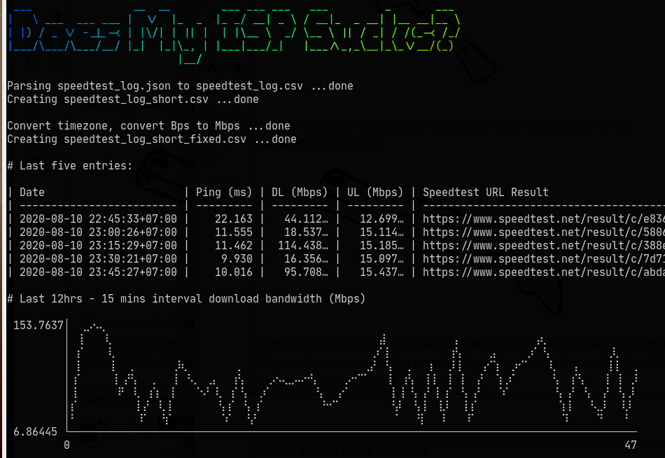

The Raspberry Pi.
Raspberry Pi 3B+ from Kios Robot https://tokopedia.com/kiosrobot
This will be a headless computer. No need for desktop/etc.
Download andinstall Raspbian Lite
Don't need wifi. Disable wifi, add: dtoverlay=pi3-disable-wifi to file /boot/config.txt
ISP bandwidth check.
Using Speedtest.net.
Details in Does My ISP Sucks https://github.com/ialexs/doesmyispsucks

Scheduled torrent.
Using the transmission-daemon and transmission-cli from Transmission
- Pretty straight forward info: link
- Saving download to home NAS:
sudo mount -t nfs <NAS_IPADDR>:/nfs/Public /home/pi/torrent/
Findings:
The Transmission configuration file
/etc/transmission-daemon/settings.jsonreseted back to default upon restarting transmission service.Don't care much. Dirty solution:
- Keep a modified settings in another file. Overwrite the configuration file.
- Just reload service (don't restart)
Blink lights when ISP slowing down.
Will write detail later.
Testing https://github.com/quentinsf/qhue with Phillips Hue Bridge.
Currently using IFTTT with Fingbox
Auto DM ISP
Will write detail later.
DM ISP when result DoesMyISPSucks result :shit: for more than two fifteen-minutes interval.
Using:
- Twitter's
twurl- https://github.com/twitter/twurl - @sferik t - https://github.com/sferik/t
Easier using t.
Keeping twurl to learn Twitter's API end-points.